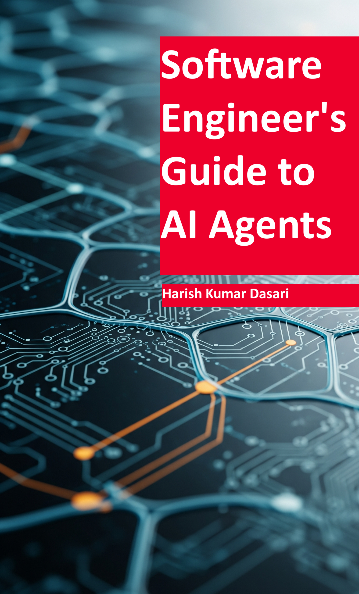

Software Engineer’s Guide to AI Agents
by
Harish Kumar Dasari
Large Language Models (LLMs) have rapidly moved from research labs to practical applications, capturing the imagination of technologists and the public alike. For software engineers, LLMs represent a new class of powerful tools and components that can be integrated into systems to solve complex problems, automate tasks, and create novel user experiences. This chapter aims to demystify LLMs, providing a foundational understanding geared specifically towards software engineering perspectives and applications.
At its core, a Large Language Model is an advanced type of artificial intelligence algorithm specifically designed to understand, generate, and manipulate human language on a large scale. These models are trained on vast quantities of text data, enabling them to produce coherent and contextually relevant responses to a wide array of prompts. It’s crucial for software engineers to view LLMs not as sentient entities possessing genuine understanding, but as sophisticated pattern-matching and generation engines. Their ability to recognize, summarize, translate, predict, and generate content makes them powerful components within larger software systems.
The utility of LLMs extends beyond just human language. They can be applied to other "languages" or scenarios where communication of different types is needed, such as understanding protein and molecular sequences in biology or, more directly relevant to software engineers, generating and understanding software code.
A fundamental characteristic that engineers must grasp is that LLMs operate on principles of probability, not on a basis of truth or genuine comprehension. They predict "what word should come next" to produce fluent text, but they do not inherently understand the reality of what they describe. This probabilistic nature means their outputs are generations based on learned patterns. This makes them highly effective for tasks like code generation or text summarization, which benefit from strong pattern recognition and fluent output. However, it also implies that their outputs may require external verification or grounding, especially when factual accuracy is critical. This understanding is paramount for designing robust software systems that leverage LLMs, as it necessitates incorporating mechanisms for validation, error handling, and potentially human oversight in critical applications.
Interacting with an LLM involves several core concepts that software engineers need to understand to effectively harness their capabilities.
The process begins when a user or a system provides text input to the LLM. This input is commonly referred to as a "prompt". The prompt serves as the instruction or the context based on which the LLM will generate a response. For software engineers, crafting effective prompts—a practice known as prompt engineering—is a key skill for guiding the LLM to produce desired outputs.
Based on the input prompt and the patterns it has learned during training, the LLM generates an output, typically in the form of text. This output is often called a "generation." The quality and relevance of the generation depend heavily on the prompt, the model’s training, and various configurable parameters.
LLMs don’t process text as whole words or characters directly. Instead, they break down text into smaller units called "tokens". A token can be a word, a part of a word (sub-word), or even a single character, depending on the specific tokenization scheme used by the model. For software engineers, understanding tokens is important because API costs for many commercial LLMs are based on the number of tokens processed (both input and output). Additionally, LLMs have maximum token limits for their input context and output generation, which can influence how applications are designed.
LLMs possess millions, or even billions, of "parameters". These parameters are essentially the weights and biases within the model’s neural network that are learned during the training process. They collectively define the model’s behavior and its ability to understand language patterns and generate human-like text. Generally, a higher number of parameters correlates with greater model capability but also demands more computational resources for training and inference.
This is a crucial parameter that engineers can control when generating text with an LLM. Temperature influences the randomness of the LLM’s output. A lower temperature (e.g., 0.0 to 0.3) makes the output more deterministic and focused; the LLM will tend to pick the most probable next token. This is useful for tasks requiring factual accuracy or predictable outputs, like code generation or direct question answering. A higher temperature (e.g., 0.7 to 1.0 or higher) results in more random, creative, and diverse outputs, as the LLM is more likely to choose less probable tokens. This can be beneficial for creative writing or brainstorming but may also increase the likelihood of generating nonsensical or irrelevant responses. Finding the right temperature setting is often a matter of experimentation based on the specific application needs.
Grasping these concepts allows software engineers to move beyond treating LLMs as black boxes. Tokenization, parameter counts, and especially temperature are practical levers for controlling LLM behavior, managing API costs, and optimizing the performance and predictability of LLM-integrated applications.
While a deep dive into the mathematical intricacies of LLMs is beyond the scope of this book, a simplified understanding of their internal workings is beneficial for software engineers. LLMs learn from immense volumes of text data through a process often involving unsupervised learning. During this phase, the model is not given explicit instructions on what to do with the data but rather learns to identify patterns, structures, and relationships between words and concepts embedded within the text.
The fundamental mechanism by which most LLMs operate is "next token prediction". Given a sequence of input tokens, the model calculates the probability distribution for all possible next tokens in its vocabulary and then selects one (or samples from the distribution) to continue the sequence. T his process is repeated, with each newly generated token being added to the input sequence for predicting the subsequent token, allowing the LLM to generate coherent and contextually relevant text autoregressively.
The development of an LLM typically involves two main stages:
Pre-training: This is where the model learns general language understanding from a massive, diverse corpus of text data (e.g., books, articles, websites). The goal is to build a foundational understanding of language, grammar, common knowledge, and reasoning abilities.
Fine-tuning: After pre-training, a model can be further trained on a smaller, more specific dataset to adapt its capabilities to a particular task or domain. For example, a general pre-trained model can be fine-tuned on a dataset of medical research papers to specialize in medical language, or on a corpus of code to improve its code generation abilities. Fine-tuning can also adjust the model’s tone, style, or factual knowledge.
The seemingly intelligent outputs of LLMs, such as their ability to generate working code, refactor existing code , or engage in complex dialogue, all stem from this core probabilistic "next token prediction" mechanism. This understanding is vital for engineers when debugging unexpected model outputs or so-called "hallucinations." Hallucinations, where an LLM generates incorrect or fabricated information despite sounding plausible , are not entirely random errors. They can be seen as logical outcomes of the probabilistic generation process when the input prompt is ambiguous, poorly constrained, or leads the model into areas of the learned pattern-space that were sparsely represented in its training data. Recognizing this helps in developing better prompt engineering strategies and in designing systems that can validate or provide corrective feedback for LLM outputs, especially in critical applications.
The computational demands of training and running Large Language Models are substantial, and Graphics Processing Units (GPUs) play a critical role in handling these intensive workloads. LLM computations, particularly during the training and inference (generation) phases, are heavily dominated by matrix-matrix multiplication operations. GPUs, with their massively parallel architecture, are exceptionally well-suited for performing these types of calculations far more efficiently than traditional CPUs.
A key factor in LLM performance on GPUs, especially during inference, is memory bandwidth. While computational power (measured in FLOPS - Floating Point Operations Per Second) is important, the speed at which data (model parameters, intermediate calculations) can be moved between the GPU’s main memory (VRAM) and its compute units often becomes the bottleneck, particularly for the decoding phase of text generation. This means that simply having a GPU with high FLOPS might not guarantee the best performance if its memory bandwidth is insufficient for the model’s size and the desired batching strategy.
LLM text generation typically involves a two-step process on GPUs :
Prefill (Prompt Processing): When a prompt is first given to the LLM, the tokens in this input prompt are processed in parallel by the GPU. This phase is generally compute-bound.
Decoding (Token Generation): After the initial prompt processing, text is generated one token at a time in an autoregressive manner. Each newly generated token is appended to the input sequence and fed back into the model to produce the next token. This phase is often memory-bandwidth-bound.
To optimize these processes, several techniques are employed:
KV Caching (Key-Value Caching): During the autoregressive decoding phase, the attention mechanism (discussed in the next section) needs to consider all previously generated tokens. Without optimization, this would involve significant re-computation. KV caching addresses this by saving the intermediate "key" and "value" states from the attention layers for previously processed tokens. These cached values are then reused in subsequent token generation steps, avoiding redundant calculations and significantly speeding up the decoding process. Effective management of the KV cache memory is crucial for good inference performance.
Quantization: This technique involves reducing the numerical precision of the model’s parameters (weights). For example, parameters might be converted from 32-bit floating-point (FP32) or 16-bit floating-point (FP16) to 8-bit integers (INT8) or even 4-bit integers (INT4). Smaller data types mean the model takes up less VRAM and, critically, less data needs to be moved between memory and compute units, which can speed up inference, especially in memory-bandwidth-bound scenarios. However, quantization can sometimes lead to a slight degradation in model accuracy, so a balance must be struck.
For software engineers involved in deploying or managing LLM applications, understanding these GPU processing characteristics is vital. It informs choices about hardware selection, model optimization strategies (like quantization), batching techniques for requests, and overall system architecture to achieve desired performance targets (like Time To First Token (TTFT) and Time Per Output Token (TPOT) ) and manage operational costs effectively.
The vast majority of modern Large Language Models, including well-known ones like GPT, LLaMa, and Claude, are built upon a neural network architecture called the Transformer. Introduced in a 2017 paper titled "Attention is All You Need" , the Transformer architecture revolutionized natural language processing by providing a more effective way to handle sequential data, like text, compared to previous architectures such as Recurrent Neural Networks (RNNs) and Long Short-Term Memory (LSTMs) networks.
For software engineers, having a conceptual understanding of the Transformer’s key components is beneficial for appreciating why LLMs are so powerful and how they fundamentally operate, without needing to delve into the deepest mathematical details.
Input Embeddings and Tokenization: As discussed earlier, input text is first broken down into tokens. Each token is then converted into a numerical vector called an "embedding". These embeddings represent the tokens in a high-dimensional space where tokens with similar meanings or contexts are located closer to each other. This numerical representation is what the model actually processes.
Positional Encoding: Unlike RNNs that process tokens sequentially, Transformers can process all tokens in an input sequence in parallel. This parallelism is a key to their efficiency but means the model doesn’t inherently know the order of the tokens. Positional encoding solves this by adding information to each token’s embedding that indicates its position within the sequence. This allows the model to understand and utilize word order, which is crucial for language comprehension.
Self-Attention Mechanism: This is arguably the most critical innovation of the Transformer. The self-attention mechanism allows the model, when processing a particular token, to look at all other tokens in the input sequence and weigh their importance or relevance to the current token. In essence, each token calculates an "attention score" with every other token in the sequence. These scores determine how much "focus" or "attention" to pay to other tokens when generating a representation for itself. This allows the model to capture long-range dependencies and contextual relationships between words, no matter how far apart they are in the sequence. For example, in the sentence "The cat didn’t chase the mouse, because it was not hungry," self-attention helps the model understand that "it" refers to "cat".
Multi-Head Attention: Instead of performing self-attention just once, Transformers use "multi-head" attention. This means the self-attention mechanism is run multiple times in parallel, with each "head" learning different types of relationships or focusing on different aspects of the input sequence. The outputs from these multiple heads are then combined, allowing the model to capture a richer and more diverse set of contextual information.
Feed-Forward Networks (FFN): After the attention mechanism has processed the tokens and incorporated contextual information, each token’s representation is passed through a position-wise Feed-Forward Network. This FFN consists of a few fully connected layers and is applied independently to each token. Its role is to further process and transform each token’s representation, adding more non-linearity and complexity to the model’s understanding. The formula is generally FFN(x)=max(0,xW1+b1)W2+b2.
Encoder-Decoder Architecture (High-Level): The original Transformer model was designed for machine translation and featured an encoder-decoder structure.
The Encoder processes the input sequence (e.g., a sentence in English) and builds a rich contextual representation of it. Encoder-only models are good for tasks requiring input understanding, like classification.
The Decoder takes the encoder’s output (and potentially other inputs) and generates the output sequence (e.g., the translated sentence in French). Decoder-only models are good for generative tasks like text completion. Many modern LLMs primarily used for text generation (like GPT models) are decoder-only architectures, while others used for tasks like summarization might use the full encoder-decoder structure or be encoder-only (like BERT).
Stacking Layers: Transformer models are typically "deep," meaning they consist of multiple encoder blocks (in the encoder) and multiple decoder blocks (in the decoder) stacked on top of each other. Each block contains the self-attention and feed-forward network components. This stacking allows the model to learn increasingly complex and abstract representations of the input data as it passes through the layers.
A simplified textual representation of a single Transformer block (which could be an Encoder block or a Decoder block, with slight variations) would look like this:
Explanation of Diagram:
Input: The process starts with token embeddings that have positional encoding added to them.
Multi-Head Self-Attention: This input goes into the multi-head self-attention mechanism, where tokens interact and weigh each other’s importance.
Add & Norm Layer: The output of the attention layer is typically added to the original input to that layer (a residual connection) and then normalized (Layer Normalization). This helps with training stability and information flow.
Feed-Forward Network: The normalized output then passes through a position-wise feed-forward network for further transformation.
Add & Norm Layer: Another residual connection and layer normalization are applied.
Output: The output of this block can then be fed into the next identical block (if stacking multiple blocks) or, if it’s the final block, to a final output layer that converts the processed representations into token probabilities for generation. Decoder blocks would also have an additional multi-head attention layer that attends to the output of the encoder (in encoder-decoder architectures).
The self-attention mechanism is the pivotal innovation that enables Transformers to effectively handle long-range dependencies in text, a significant improvement over prior architectures like RNNs and LSTMs which struggled with this due to their sequential nature and issues like vanishing gradients. For software engineers, this superior ability to maintain context over much longer inputs is critical for tasks such as understanding entire code files, lengthy technical documents, or extended conversations, making LLMs far more versatile and powerful.
While LLMs possess remarkable abilities in understanding and generating text, their knowledge is inherently limited by their training data, which has a specific cutoff point in time. They also lack the ability to perform precise calculations reliably or interact directly with the external world, such as accessing live databases or triggering actions in other software systems. "Tool use," often implemented via "function calling," is a mechanism that allows LLMs to overcome these limitations by integrating with external functions, APIs, and data sources.
The core idea behind LLM tool use is to enable the model to request the execution of predefined functions when it determines that doing so would help fulfill a user’s request or achieve a given task. Instead of trying to generate an answer based solely on its internal knowledge, the LLM can recognize when it needs, for example, current weather information, the result of a mathematical calculation, or data from a specific enterprise API.
Function Calling is the common term for how this is implemented. In this paradigm, LLMs like GPT-4 have been fine-tuned to detect when a function call is necessary and to output a structured data object, typically in JSON format, that specifies the name of the function to be called and the arguments to pass to it. Crucially, the LLM itself does not execute the function. Instead, it acts as a "reasoner" or "router," deciding which tool (function) is appropriate for the current context and what inputs that tool needs. The actual execution of the function is handled by the application code that is interacting with the LLM.
This capability represents a fundamental architectural pattern for building LLM-powered applications. It allows software engineers to create a powerful synergy by combining the natural language understanding and reasoning strengths of LLMs with the deterministic, precise, and specialized capabilities of existing software tools and APIs. Each component in this architecture focuses on what it does best: the LLM interprets intent and plans the use of tools, while traditional software components execute those tools and provide factual results. This separation of concerns is key to building robust, extensible, and reliable LLM-integrated systems.
The interaction between an LLM and an external tool or API typically follows a well-defined workflow:
User Query to LLM: The process starts with a user providing a query or instruction to the LLM-powered application.
LLM Processing and Tool Selection: The LLM analyzes the query. If it determines that an external tool is needed to fulfill the request, it generates a structured output (e.g., a JSON object) that specifies the function to be called and the necessary arguments. For example, if the user asks, "What’s the weather like in London?", the LLM might output:
[ caption=Example LLM output for tool selection, basicstyle=\ttfamily\footnotesize\linespread{0.9}, breaklines=true]
{
"tool_name": "get_weather",
"arguments": {
"city": "London",
"unit": "celsius"
}
}
Application Code Receives Request: The application code that hosts the LLM receives this structured request.
Function Execution by Application: The
application code then parses this request and executes the actual
get_weather function (which might involve calling an
external weather API) with the provided arguments ("London",
"celsius").
Result Returned to LLM: The result from the executed function (e.g., "The weather in London is 15°C and cloudy") is then sent back to the LLM, typically as part of a new prompt or context.
LLM Formulates Final Response: The LLM uses this new information (the tool’s output) to formulate a natural language response to the user’s original query (e.g., "The current weather in London is 15 degrees Celsius and cloudy.").
To make the LLM "aware" of the available tools and how to use them, developers provide descriptions or schemas of these tools as part of the initial prompt or system message to the LLM. These descriptions detail what each tool does, the parameters it expects (including their names, types, and purpose), and sometimes even examples of how to use it.
The quality of these tool descriptions is critical. They act as an "API contract" for the LLM. A clear, accurate, and unambiguous description directly impacts the LLM’s ability to correctly choose the right tool and provide the correct arguments. If the description is vague or misleading, the LLM is likely to make errors in its function call requests, leading to application failures or incorrect results. Therefore, crafting effective tool descriptions is a new and important skill for software engineers building LLM applications, akin to designing good API documentation for human developers.
The ability of LLMs to use tools unlocks a vast range of practical applications, making them significantly more useful in real-world business scenarios. Some common examples include:
LLMs have knowledge cutoffs, meaning their training data only goes up to a certain point in time. Tools allow them to access current information.
Example: A user asks, "What’s the current stock
price for Company X?" The LLM can use a get_stock_price
tool that calls a financial markets API to fetch the latest
price.
Example: Answering questions about today’s news or weather forecasts.
LLMs can use tools to query and retrieve data from various databases.
Example: A customer service LLM might use a
get_customer_order_status tool that queries a CRM or order
management system database based on a customer’s ID or order
number.
Tools can enable LLMs to trigger actions in other systems.
Example: A personal assistant LLM could use a
send_email tool to draft and send an email based on user
instructions, or a schedule_meeting tool to interact with a
calendar API.
Example: An LLM could use a tool to pay a bill through a financial service API.
LLMs are not inherently strong at precise mathematical calculations. Tools can offload these tasks to specialized engines.
Example: For a query like "What is 25% of 789?", the LLM can call a calculator tool or even a more advanced computational engine like WolframAlpha.
LLMs can integrate with internal business applications, such as CRMs, ERPs, or proprietary knowledge bases, via tools that wrap these systems’ APIs. This allows LLMs to provide contextually relevant information based on specific company data.
By connecting LLMs to live data streams and actionable systems, tool use transforms them from sophisticated text generators into versatile components capable of participating actively in business processes and information workflows.
Building upon the concept of LLMs using tools, we arrive at a more advanced paradigm: LLM Agents. These are systems that leverage an LLM not just for a single tool use in response to a query, but as a central "brain" or reasoning engine to autonomously (or semi-autonomously) plan and execute a sequence of actions, often involving multiple tool uses, to achieve more complex and often multi-step goals.
An LLM Agent can be understood by drawing an analogy to a human professional tasked with a complex project. Consider, for instance, a human travel agent. A client might approach the travel agent with a high-level request like, "I want to plan a two-week vacation to Italy in June, focusing on history and good food, with a budget of $5000."
The human travel agent (the LLM Agent) doesn’t just give a single answer. Instead, they:
Understand the Goal: Decipher the client’s requirements, preferences, and constraints.
Plan: Break down the complex request into smaller, manageable sub-tasks: research flights, find suitable accommodation in different cities, identify historical sites, look up culinary experiences, check visa requirements, and ensure the plan stays within budget.
Use Tools: Employ various tools like a flight booking system (computer software), a hotel reservation platform, guidebooks or online resources (information sources), a calculator, and a telephone or email to contact suppliers.
Access Memory/Knowledge: Draw upon their own knowledge of Italy, past client experiences, and information from brochures or databases.
Make Decisions: Choose the best flight options, select appropriate hotels, and create an itinerary. This might involve some back-and-forth if initial options don’t fit the budget or preferences.
Execute Steps: Book flights and hotels, and provide the client with the finalized itinerary.
Adapt: If a preferred hotel is booked, the agent adapts by finding a suitable alternative.
An LLM Agent operates on similar principles. It receives a high-level goal, and its core LLM component reasons about how to achieve it. It formulates a plan, which might involve calling various tools (APIs, functions, databases), processing the information obtained, making decisions based on that information, and potentially revising its plan as it proceeds until the goal is met or it determines it cannot be met. Key characteristics of LLM agents include reasoning, planning, memory, tool use, and a degree of autonomy in pursuing their objectives.
The transition from simple tool-using LLMs to LLM Agents signifies a significant step towards more sophisticated AI systems. It represents a shift from single-turn, request-response interactions to multi-step, stateful, and goal-directed processes. This evolution has profound implications for software architecture, demanding more intricate control flows, robust state management mechanisms, and comprehensive error handling strategies to manage the increased complexity and autonomy. Frameworks such as LangChain and others developed by companies like NVIDIA and Hugging Face have emerged to help software engineers manage these complexities in building agentic systems.
LLM Agents are typically conceptualized as having several key interacting components that enable their autonomous behavior. Understanding these components helps in designing and building effective agentic systems.
At the heart of every LLM Agent is the Large Language Model itself. This core LLM is responsible for the higher-level cognitive functions of the agent:
Understanding the user’s goal or task.
Reasoning about the steps needed to achieve the goal.
Making decisions about which tools to use and when.
Interpreting the outputs from tools.
Generating responses or formulating the next steps in the plan. The capabilities of the chosen LLM (e.g., its reasoning prowess, knowledge base, and ability to follow complex instructions) directly influence the agent’s overall performance.
For an agent to perform multi-step tasks effectively, it needs to remember information from previous steps and interactions. Memory in LLM agents can be categorized into:
Short-Term Memory: This is akin to working memory and typically holds the context of the current interaction. It includes the recent conversation history, the current plan, and intermediate results from tool use. This allows the agent to maintain coherence and relevance during an ongoing task. For example, a chatbot agent uses short-term memory to remember what the user said a few turns ago.
Long-Term Memory: This allows the agent to store and retrieve information over extended periods, potentially across multiple interactions or sessions. This can involve saving key facts, user preferences, or summaries of past tasks to external storage, such as vector databases (often used in Retrieval Augmented Generation, or RAG, systems) or traditional databases. Long-term memory enables personalization and learning from past experiences.
This component is responsible for devising a strategy to achieve the given goal. Planning in LLM agents involves:
Task Decomposition: Breaking down a complex, high-level goal into smaller, more manageable sub-tasks or steps. The LLM core often performs this decomposition based on the goal and its understanding of available tools.
Plan Formulation: Creating a sequence of actions or tool uses to address the sub-tasks.
Reflection and Self-Correction: As the agent executes its plan, it may encounter errors, unexpected results, or new information. The planning component, often guided by the LLM core, allows the agent to reflect on its progress, evaluate the effectiveness of its current plan, and make adjustments or corrections if necessary. This iterative refinement is crucial for handling dynamic environments and complex problems.
These are the external functions, APIs, databases, or other resources that the agent can utilize to interact with the outside world, gather information, or perform actions that the LLM core cannot do on its own. The set of available tools defines the agent’s capabilities beyond its inherent language processing abilities. Examples include web search APIs, calculators, code interpreters, database query interfaces, and APIs for enterprise systems.
The following table provides a summary of these components and maps them to the human chef analogy presented in research , making the concepts more tangible for software engineers.
| Agent Component | Description | Human Chef Analogy (from ) | Key Functions |
| LLM Core (Brain) | The central LLM responsible for understanding, reasoning, planning, and decision-making. | Chef’s culinary knowledge, experience, and understanding of recipes. | Goal interpretation, task decomposition, tool selection, output synthesis. |
| Short-Term Memory | Holds context for the current interaction, recent history, and intermediate results. | Chef’s mental checklist or scratchpad during cooking a specific dish. | Maintaining conversation flow, tracking current sub-task progress. |
| Long-Term Memory | Stores and retrieves information from past interactions, learned knowledge, or external knowledge bases. | Chef’s repository of past cooking experiences and learned techniques. | Personalization, learning from past successes/failures, retrieving relevant established knowledge. |
| Planning Module | Devises and refines strategies to achieve goals, including task decomposition and self-correction. | Chef creating a menu, outlining preparation steps, adapting if ingredients are missing or cooking times vary. | Breaking down goals, sequencing actions, evaluating progress, modifying plans based on new information. |
| Toolset | External functions, APIs, or resources the agent can use to gather information or perform actions. | Chef’s kitchen equipment (knives, ovens, mixers) and access to pantry/recipes. | Accessing real-time data, performing calculations, interacting with other systems, executing specific actions. |
This component-based view helps engineers understand the different facets of an agent’s operation and provides a mental model for designing and debugging these sophisticated systems.
The ability of LLM agents to "reason" and make decisions is central to their functionality. This process typically involves the LLM core analyzing the current state (which includes the overall goal, information gathered so far, and the history of actions taken) and then deciding on the next optimal action to move closer to the goal. Several prompting techniques and frameworks have been developed to enhance and structure this reasoning process:
This technique encourages the LLM to "think step by step" before arriving at a final answer or decision. Instead of directly outputting the result, the LLM is prompted to generate intermediate reasoning steps. This has been shown to improve performance on complex tasks that require multi-step thinking, as it allows the model to break down the problem and articulate its rationale. For an agent, these intermediate thoughts can guide its planning and tool selection process.
This is a widely adopted pattern for agentic behavior that explicitly combines reasoning with action. In the ReAct framework, the agent typically iterates through a loop of:
Thought: The LLM analyzes the current situation and decides what to do next.
Action: The LLM decides to use a specific tool with certain arguments.
Observation: The tool is executed by the external environment, and the result (observation) is fed back to the LLM. This cycle repeats, with the LLM using the observation from the previous action to inform its next thought and subsequent action, until the task is completed.
Beyond CoT and ReAct, more sophisticated reasoning frameworks are being explored, such as:
Tree-of-Thought (ToT): This approach allows the LLM to explore multiple reasoning paths or alternative plans simultaneously, much like exploring different branches of a tree. It can then evaluate these different paths and choose the most promising one, or even backtrack if a path leads to a dead end.
Graph-of-Thought (GoT): This extends the idea further by representing thoughts as nodes in a graph, allowing for more complex and cyclical reasoning patterns, where thoughts can be combined and revisited.
These reasoning techniques enable agents to tackle problems that are too complex for a single, direct LLM query. The iterative nature of frameworks like ReAct allows agents to gather information incrementally, adapt to new findings, and correct course if early steps prove unfruitful. This is fundamental to their ability to handle complex, multi-step problems.
However, this iterative reasoning process also introduces challenges for software engineers. Unlike a straightforward function call, an agent’s path to a solution might involve multiple LLM invocations and tool uses. The control flow is not a simple linear sequence but a loop driven by the LLM’s ongoing reasoning. This can make predicting the exact sequence of operations, debugging issues, and ensuring reliable termination more complex than in traditional software systems. A key design consideration is to ensure the agent makes consistent progress towards its goal and to implement safeguards against unproductive loops or repetitive actions.
The integration of LLMs and agents with a multitude of external tools, APIs, and data sources presents a significant engineering challenge. Without standardization, developers face the daunting task of creating custom connectors for each unique combination of agent and tool. The Model Context Protocol (MCP) has emerged as an open standard designed to simplify and standardize these interactions.
The primary motivation behind MCP is to solve the "M×N integration problem". In a typical enterprise or application ecosystem, there might be M different AI models or agents and N different tools or data sources they need to connect to. Without a standard, this could necessitate developing and maintaining up to M×N unique integrations, leading to a combinatorial explosion of complexity, redundancy, and maintenance overhead. This is inefficient, error-prone, and hinders scalability.
MCP aims to act as a "universal connector" or an "AI USB port". It provides a standardized protocol that defines how AI applications (acting as MCP clients) can discover and interact with external tools and data sources (exposed as MCP servers). This means a tool provider can implement a single MCP server for their service, and any MCP-compliant AI application can then use it. Conversely, developers of AI applications can build their systems to consume MCP-compliant services, gaining access to a growing ecosystem of tools without writing bespoke integration code for each one.
The benefits of adopting such a standard are manifold for software engineering:
Reduced Integration Complexity: Drastically cuts down the effort needed to connect agents to new tools and data sources.
Improved Interoperability: Enables different AI models and agent frameworks to work with a common set of tools.
Faster Development Cycles: Accelerates the development of agentic applications by providing pre-existing or easily creatable connectors.
Enhanced Security and Control: Offers a structured way to manage permissions, user consent, and data flow between agents and tools.
Ecosystem Growth: Fosters a broader ecosystem where tool providers and agent developers can more easily connect their respective offerings.
From a software engineering standpoint, MCP is an architectural pattern that applies well-established principles—like standardized interfaces (akin to REST APIs with OpenAPI specifications), modularity, and separation of concerns—to the rapidly evolving domain of LLM tool integration. It’s a strategic approach to managing the inherent complexity in building sophisticated, interconnected AI systems. The "M×N integration problem" is a classic challenge in software integration, previously addressed by technologies like Enterprise Service Buses (ESBs) or standardized API formats. MCP brings a similar standardizing force to the agent-tool interface.
MCP operates on a client-host-server architecture, defining clear roles and communication patterns for interaction between LLM applications and external capabilities.
Host: This is the primary AI-powered application that the end-user interacts with, such as an IDE with an AI coding assistant, a desktop application like Claude Desktop, or a custom agentic system. The Host is responsible for:
Initiating and managing connections to MCP Servers via MCP Clients.
Orchestrating the overall workflow, including when to consult the LLM and when to use tools.
Managing security policies, user permissions, and consent for accessing tools and resources.
Potentially merging context from multiple MCP clients/servers for the LLM.
Client: An MCP Client is a lightweight component, typically embedded within the Host application. Each Client maintains a dedicated 1:1 connection with a specific MCP Server. Its responsibilities include:
Handling the MCP protocol specifics (message framing, request/response linking).
Negotiating capabilities with the Server.
Orchestrating messages between the Host (and its LLM) and the Server.
Maintaining security boundaries; for example, one client connected to a file system server should not be able to access resources managed by another client connected to a different server unless explicitly allowed by the Host.
Server: An MCP Server is an independent process or service that exposes specific capabilities (tools, resources, or prompts) to MCP Clients according to the MCP standard. The Server acts as a wrapper or an adapter for the underlying tool, data source, or business logic it represents. For instance, there could be an MCP server for interacting with a Git repository, another for querying a PostgreSQL database, and another for accessing a company’s internal CRM API.
MCP defines three primary ways Servers can expose capabilities :
Tools: These are executable functions that the AI model can decide to call. Tools typically perform actions or computations, potentially with side effects (e.g., sending an email, creating a file, querying an API that modifies data). The LLM, guided by the Host, determines when to use a tool and with what arguments.
Resources: These represent structured data streams or contextual information that the user or the AI model can use (e.g., files, logs, API responses, database records). Resources are generally for information retrieval and do not execute actions with side effects.
Prompts: These are reusable, templated messages or predefined workflows that a user can invoke or that an application can use to guide interactions with the LLM via the Server.
MCP communication is based on JSON-RPC 2.0 messages. This standard defines the structure for requests, responses, and notifications.
The protocol supports multiple transport mechanisms :
stdio (Standard Input/Output): Used for communication between processes running on the same machine. This is common for local MCP servers, like one providing access to the local file system.
HTTP + SSE (Server-Sent Events): Used for networked services or remote integrations. Client-to-server messages are typically sent via HTTP POST, while server-to-client messages (like streaming updates or notifications) can use SSE.
The connection lifecycle generally involves :
Initialization: The Client sends an initialize request to the Server, sharing its protocol version and supported features. The Server responds with its own version and its advertised capabilities (available tools, resources, prompts). The Client then acknowledges with an initialized notification. This handshake ensures compatibility.
Message Exchange: Once initialized, the Client and Server can exchange messages. This can be request-response (Client asks Server to call a tool, Server returns result) or notifications (one-way messages).
Termination: The connection can be shut down by either party.
The Host-Client-Server architecture of MCP provides a clear separation of concerns and robust security boundaries. The Host application, which contains the LLM, doesn’t need to know the intricate details of every tool it might use. It only needs to communicate with standardized MCP Clients. Each Client handles the protocol details for a specific MCP Server, and the Server, in turn, abstracts the underlying complexity of the actual tool or data source. This layered abstraction is a well-established software engineering pattern that promotes modularity (allowing different servers to be plugged in or swapped out), security (as the Host can enforce policies and Clients maintain distinct communication channels), and overall system maintainability.
The adoption of Model Context Protocol offers several tangible benefits for software engineers and organizations building agentic AI systems:
Standardized Integration: MCP provides a universal method for connecting AI models to a diverse array of data sources and tools. This significantly reduces the need for custom, one-off integrations for each new tool or data source, saving development time and effort.
Enhanced Context Awareness: By enabling AI models to access real-time data and information from external systems through a standardized interface, MCP dramatically improves their ability to provide relevant, accurate, and up-to-date responses. Agents are no longer limited to their static training data.
Dynamic Tool Discovery and Execution: MCP allows agents to dynamically query MCP servers at runtime to discover the tools and resources they offer. This means an agent can adapt its behavior based on the available capabilities, rather than being restricted to a predefined, hardcoded set of functions.
Improved Security and Access Control: The protocol is designed with security in mind. It encourages explicit user consent for tool use and data access, and the client-host-server architecture allows for the implementation of robust authentication and authorization mechanisms at different layers. This helps protect sensitive data and ensures that agents only perform actions they are permitted to.
Ecosystem Growth and Interoperability: As more tools and platforms adopt MCP, a rich ecosystem emerges where any MCP-compliant client (agent) can potentially interact with any MCP-compliant server (tool/data source). This fosters innovation and allows developers to easily compose sophisticated agentic systems by leveraging a wide range of off-the-shelf capabilities.
Modularity and Maintainability: By decoupling agents from the specific implementations of the tools they use, MCP promotes a more modular system design. Tools can be updated, replaced, or added without requiring significant changes to the agent’s core logic, as long as the MCP interface remains consistent. This improves the long-term maintainability of complex AI applications.
In essence, MCP simplifies the construction of complex, context-aware, and secure AI agent systems by standardizing a critical interface—the one between the agent’s reasoning core and the external world of data and actions. This allows engineers to focus more on the agent’s logic and goals, rather than on the plumbing of tool integration.
While the Model Context Protocol (MCP) standardizes how a single agent interacts with tools and data sources, many complex real-world problems can benefit from the collaboration of multiple specialized agents. The Agent-to-Agent (A2A) protocol is an emerging open standard designed to facilitate this inter-agent communication and coordination, enabling the development of more powerful and versatile multi-agent systems.
As tasks become increasingly intricate or span multiple domains of expertise, relying on a single, monolithic LLM agent can become inefficient or impractical. Just as in human organizations, where teams of specialists collaborate to achieve complex objectives, AI systems can benefit from a similar division of labor.
Consider a business process like launching a new product. This might involve:
A Market Research Agent to analyze trends and identify target audiences.
A Product Design Agent to conceptualize features based on research.
A Content Generation Agent to create marketing materials.
A Sales Strategy Agent to plan the go-to-market approach.
For these specialized agents to work together effectively, they need a standardized way to communicate, delegate tasks, share information, and coordinate their actions. This is where A2A comes in. It aims to allow specialized agents, potentially built by different teams or even different vendors using diverse underlying frameworks, to collaborate seamlessly on tasks that a single agent might struggle to handle alone.
The A2A protocol addresses the next level of complexity in AI system design: moving beyond an agent using tools (as facilitated by MCP) to a scenario where agents themselves can act as tools or collaborators for other agents. This shift enables the creation of more decentralized, scalable, and robust AI solutions, capable of tackling problems that require a broader range of expertise or a more distributed approach to problem-solving.
The Agent-to-Agent (A2A) protocol, spearheaded by Google and supported by numerous technology partners, is an open standard designed to enable AI agents to communicate with each other, securely exchange information, and coordinate actions across various platforms or applications. It focuses on enabling true multi-agent scenarios where agents collaborate in their natural, often unstructured, modalities.
Client Agent and Remote Agent (Server): A2A facilitates communication between a "client" agent and a "remote" agent.
The Client Agent is responsible for formulating and communicating tasks to other agents.
The Remote Agent (which acts as a server in the interaction) is responsible for receiving tasks, acting on them, and providing information or taking actions. Remote agents are typically hosted on an HTTP endpoint.
Agent Card: A crucial component for discovery, the Agent Card is a JSON-formatted document that an agent uses to advertise its capabilities, skills, connection endpoints (URL), and authentication requirements. This allows a client agent to identify the best remote agent for a particular task and understand how to communicate with it.
Task: Communication in A2A is task-oriented. A "task" is the fundamental unit of work, defined by the protocol with a unique identifier and a lifecycle (e.g., created, in-progress, completed, failed). This allows for tracking and management of potentially long-running, asynchronous collaborations.
Message and Artifacts: Agents exchange messages to convey context, instructions, replies, or user directives. The output or result of a task is known as an "artifact," which can be text, files, structured data, or other forms of content.
Communication Protocol: A2A is built on existing standards, primarily using JSON-RPC 2.0 over HTTP(S) for messaging. It supports synchronous request-response interactions, streaming of results (often via Server-Sent Events - SSE), and asynchronous push notifications for status updates on long-running tasks.
Key Design Principles :
Embrace Agentic Capabilities: Focus on enabling agents to collaborate in natural, unstructured ways, even without shared memory or tools.
Build on Existing Standards: Leverage HTTP, SSE, JSON-RPC for easier integration.
Secure by Default: Support enterprise-grade authentication and authorization.
Support for Long-Running Tasks: Design for tasks that may take hours or days, potentially involving human-in-the-loop steps, with mechanisms for real-time feedback and status updates.
Modality Agnostic: Support various data types beyond text, including audio and video streaming.
The "Agent Card" is a particularly important innovation for enabling dynamic and decentralized multi-agent systems. It functions like a service advertisement or a resume for agents, allowing them to discover and assess each other’s capabilities at runtime. This is analogous to service discovery mechanisms (e.g., using a service registry like Consul or Eureka) in microservices architectures, promoting flexibility and resilience. New agents can be introduced into the ecosystem, or existing ones updated, and other agents can discover and utilize their capabilities without requiring hardcoded integrations or system-wide reconfigurations. This dynamic discovery is essential for building scalable and adaptable multi-agent AI systems.
Model Context Protocol (MCP) and Agent-to-Agent (A2A) protocol, despite being developed by different organizations (Anthropic and Google, respectively), are designed to be complementary rather than competitive. They address different layers of functionality needed for building sophisticated AI systems:
MCP focuses on standardizing how a single AI agent (or LLM application) connects to and utilizes external tools, data sources, and resources. It "arms" an individual agent with the necessary knowledge and capabilities by providing a universal interface to the external world. Think of it as defining how an agent uses its own instruments.
A2A focuses on standardizing how multiple autonomous AI agents communicate and collaborate with each other. It enables agents to delegate tasks, share information, and coordinate their actions to achieve a common, often more complex, goal. Think of it as defining how different specialists in a team work together.
The true power emerges when these protocols are used in conjunction. An individual agent might use MCP to access its specialized tools and data. Then, that agent (or a coordinating agent) can use A2A to collaborate with other specialized agents, each of which might also be using MCP for their own tool and data access.
Imagine a complex business workflow for "resolving a customer complaint about a faulty product":
Customer Support Agent (Agent 1): Interacts with the customer (perhaps via a chat interface). It uses MCP to access tools like a CRM lookup tool (to get customer history) and a knowledge base tool (to find standard troubleshooting steps).
Technical Diagnostic Agent (Agent 2): If the issue is complex, Agent 1 might use A2A to delegate the diagnostic task to Agent 2. Agent 2, specialized in product diagnostics, could use MCP to access tools like a product specification database, a diagnostic script runner, or even an IoT data feed from the faulty device.
Logistics Agent (Agent 3): If Agent 2 determines a replacement is needed, it might use A2A to inform Agent 3 (specialized in logistics). Agent 3 would then use MCP to access tools like an inventory management system and a shipping API to arrange for the replacement.
Communication Back to Customer: Agent 1 receives updates from Agent 2 and Agent 3 via A2A and informs the customer of the resolution progress.
In this scenario, MCP provides the "how-to" for each agent to use its specific instruments, while A2A provides the "how-to" for the agents to talk to each other and coordinate the overall workflow. It’s even possible for A2A agents to be modeled as MCP resources themselves, allowing one agent framework to discover and interact with another agent as if it were a tool.
The following table provides a clearer distinction and highlights the complementary nature of MCP and A2A, which is essential for engineers designing multi-layered agentic systems.
| Feature/Focus | Model Context Protocol (MCP) | Agent-to-Agent (A2A) Protocol | How They Complement |
| Main Purpose | Standardize agent-to-tool/data source interaction (vertical integration). | Standardize agent-to-agent communication and collaboration (horizontal integration). | MCP equips individual agents with capabilities; A2A enables these agents to work together on larger tasks. |
| Architecture | Client-Host-Server: Host (LLM app) uses Clients to connect to Servers (tools/data). | Primarily Client-Remote Agent: A client agent initiates tasks with a remote agent (server). | An A2A agent might internally act as an MCP client to use its own tools. |
| Key Components | Tools, Resources, Prompts exposed by Servers. | Agent Card (for discovery), Task (unit of work), Messages, Artifacts. | An A2A Agent Card could list capabilities that are ultimately fulfilled by the agent using MCP-exposed tools. |
| Primary Interaction | Agent requests tool execution or resource access from an MCP server. | Agents discover each other via Agent Cards and delegate/collaborate on Tasks. | An agent uses MCP to get data, then A2A to share that data or a derived insight with another agent. |
| Security Focus | User consent for tool/resource access, authN/authZ for server connections. | Enterprise-grade authN/authZ between agents, secure exchange of information. | Secure tool access via MCP can be a prerequisite for an agent to securely participate in an A2A collaboration requiring that tool’s output. |
| Typical Use Case | An LLM agent using an external API (e.g., weather) or querying a database. | A multi-agent system where a planning agent delegates sub-tasks to specialized agents. | A research agent uses MCP to gather data from multiple sources, then uses A2A to pass a summary to a report-writing agent. |
Understanding these distinctions and synergies helps software engineers choose the appropriate protocol(s) when architecting different parts of complex, intelligent systems.
FastAPI, a modern, high-performance web framework for building APIs with Python, has gained significant popularity among software engineers due to its speed, ease of use, and robust features like automatic data validation and documentation. Its asynchronous capabilities and reliance on Python type hints for data validation make it particularly well-suited for implementing the server-side components of both Model Context Protocol (MCP) and Agent-to-Agent (A2A) protocol interactions.
Before diving into building MCP or A2A services, a proper FastAPI development environment is essential. This typically involves:
Python Installation: Ensuring a compatible version of Python is installed (often Python 3.8+ for modern FastAPI features, though specific MCP/A2A SDKs might have their own requirements, e.g., Python 3.10+ for some MCP tools).
Virtual Environment: Creating an isolated Python
virtual environment for the project to manage dependencies effectively.
This can be done using venv or tools like
uv.
Shell commands:
python -m venv .venv
source .venv/bin/activate # On Linux/macOS
# .venv\Scripts\activate # On WindowsInstalling FastAPI and Uvicorn: Installing the core FastAPI library and an ASGI server like Uvicorn to run the application. Shell commands:
pip install fastapi uvicornAlternatively, using uv: Shell commands:
uv pip install fastapi uvicornHelper Libraries for MCP/A2A: For MCP server development with
FastAPI, libraries like FastAPI-MCP or FastMCP
can significantly simplify the process by handling much of the protocol
boilerplate. These would be installed similarly: Shell commands:
pip install fastapi-mcp # or mcp-sdk for FastMCP related toolsFor A2A, if a Python SDK is available (as suggested by), it would
also be installed in the virtual environment. For example,
pip install a2a-sdk.
FastAPI’s native asynchronous support is a key advantage, as many interactions in agentic systems (like calling external APIs or waiting for LLM responses) are I/O-bound and benefit from non-blocking operations. Its use of Pydantic for data modeling ensures that incoming requests and outgoing responses conform to the expected schemas, which is crucial when implementing standardized protocols like MCP (JSON-RPC based) and A2A. Furthermore, FastAPI’s automatic generation of OpenAPI documentation can be helpful for developers understanding and testing the MCP/A2A services they build.
Let’s illustrate building a simple MCP server using FastAPI. This
server will expose a basic tool, for example, a function that
concatenates two strings. We can leverage a library like
FastAPI-MCP or FastMCP for this, or implement
the core MCP logic if needed. For simplicity, we will conceptualize
using a helper library that integrates with FastAPI.
FastAPI-MCP is designed to automatically convert
existing FastAPI endpoints into MCP tools or resources.
from fastapi import FastAPI
# Hypothetical import based on library's purpose
from fastapi_mcp import FastApiMCP
from pydantic import BaseModel
# Define the FastAPI application
app = FastAPI(title="Simple String Tools MCP Server")
# Define request model for our tool
class ConcatenateRequest(BaseModel):
string1: str
string2: str
# Define response model for our tool
class ConcatenateResponse(BaseModel):
result: str
# Define a FastAPI endpoint that will become an MCP tool
@app.post("/tools/concatenate", response_model=ConcatenateResponse)
async def concatenate_strings(request: ConcatenateRequest) -> ConcatenateResponse:
"""
Concatenates two input strings and returns the result.
This tool is useful for joining text segments.
"""
concatenated_string = request.string1 + request.string2
return ConcatenateResponse(result=concatenated_string)
# Initialize and mount the FastAPI-MCP server
# The library would inspect 'app' for endpoints and expose them via MCP.
# It would use endpoint path, docstrings, and Pydantic models for MCP tool schema.
mcp_server = FastApiMCP(
app,
name="StringToolsServer",
description="An MCP server providing basic string manipulation tools.",
base_url="http://localhost:8000" # URL where this FastAPI app runs
)
mcp_server.mount() # This would typically expose an /mcp endpoint
if __name__ == "__main__":
import uvicorn
uvicorn.run(app, host="0.0.0.0", port=8000)In this example: We define a standard FastAPI application and an
endpoint (/tools/concatenate). Pydantic models
(ConcatenateRequest, ConcatenateResponse)
define the input and output schemas for the tool. FastAPI uses these for
validation and OpenAPI documentation, and FastAPI-MCP would
leverage them to generate the MCP tool’s input and output schemas. The
docstring of the concatenate_strings function would serve
as the description for the MCP tool, helping the LLM understand what the
tool does. FastApiMCP(app,...).mount() is the key step
where the library integrates with the FastAPI app instance. It would
typically scan the app’s routes, identify those intended as MCP tools
(perhaps based on decorators or conventions), and expose them via a
dedicated MCP endpoint (e.g., /mcp). This endpoint would
handle incoming JSON-RPC messages according to the MCP
specification.
FastMCP often uses decorators to explicitly define MCP tools from Python functions.
from fastapi import FastAPI
from fastmcp import FastMCP # Hypothetical import based on library's purpose
import uvicorn
# Create an MCP server instance
mcp_logic = FastMCP("SimpleStringTools")
# Define a Python function and decorate it as an MCP tool
@mcp_logic.tool()
def concatenate(string1: str, string2: str) -> str:
"""
Concatenates two input strings.
Use this to join pieces of text.
Parameters:
string1 (str): The first string.
string2 (str): The second string.
Returns:
str: The combined string.
"""
return string1 + string2
# Create a FastAPI app to host the MCP server logic
app = FastAPI()
# Mount the FastMCP logic onto a FastAPI route (e.g., /mcp)
# This step would involve specific integration code provided by FastMCP
# to handle JSON-RPC requests at this endpoint and dispatch to mcp_logic.
# For example: app.include_router(mcp_logic.as_fastapi_router(), prefix="/mcp")
# A simplified conceptual mounting:
@app.post("/mcp")
async def handle_mcp_request(request_data: dict): # Actual handling is more complex
# FastMCP would provide a handler here to process JSON-RPC,
# invoke 'concatenate' if requested, and return JSON-RPC response.
# This is a placeholder for that complex logic.
if request_data.get("method") == "tool_concatenate": # Simplified check
params = request_data.get("params", {})
result = concatenate(params.get("string1"), params.get("string2"))
return {"jsonrpc": "2.0", "result": result, "id": request_data.get("id")}
return {"jsonrpc": "2.0", "error": {"code": -32601, "message": "Method not found"}, \
"id": request_data.get("id")}
if __name__ == "__main__":
uvicorn.run(app, host="0.0.0.0", port=8000)In this FastMCP style: An FastMCP instance
(mcp_logic) is created. The @mcp_logic.tool()
decorator registers the concatenate function as an MCP
tool. FastMCP would use the function signature (type hints) and
docstring to generate the MCP tool schema. The FastMCP instance then
needs to be exposed via a FastAPI endpoint (e.g., /mcp).
The library would provide mechanisms to translate incoming JSON-RPC
requests at this endpoint into calls to the registered Python functions
and format the responses correctly.
Libraries like FastAPI-MCP and FastMCP aim
to abstract away the low-level details of the MCP protocol (like
JSON-RPC message parsing, request dispatching, and response formatting),
allowing software engineers to focus on implementing the actual business
logic of their tools. This significantly lowers the barrier to entry for
creating MCP-compliant servers.
To visualize how a FastAPI application serves as an MCP server, consider the following components and their interactions:
MCP Client / LLM Agent Host: This is the application (e.g., an IDE with an AI assistant, Claude Desktop, or a custom Python script running an agent) that wants to use a tool. It constructs an MCP request (a JSON-RPC message).
Transport Layer: The request is sent over a chosen transport (stdio for local servers, HTTP/SSE for remote servers) to the FastAPI application.
FastAPI Application (MCP Server):
Transport Handler: The FastAPI application (via Uvicorn or another ASGI server) listens for incoming requests on the configured transport.
MCP Protocol Layer: A library like
FastAPI-MCP or FastMCP, or custom MCP handling
logic, parses the incoming JSON-RPC message. It identifies that this is
a request to call a specific MCP tool.
FastAPI Router: The protocol layer dispatches
the call to the appropriate FastAPI endpoint (if using
FastAPI-MCP where endpoints are tools) or to the Python
function registered as an MCP tool (if using FastMCP-style
decorators).
FastAPI Endpoint / Decorated Function: This is the Python code written by the developer that implements the tool’s logic.
Business Logic / API Client: The tool’s implementation might involve direct computation, calling other internal services, or making requests to external APIs or databases.
Response Path: The result from the business logic is returned to the FastAPI endpoint/function, then formatted by the MCP Protocol Layer into a JSON-RPC response, and sent back to the MCP Client via the Transport Handler.
Underlying Data Source / External API: If the MCP tool is a wrapper around an existing service, the Business Logic component will interact with this external system.
This diagram illustrates the flow of an MCP tool invocation request from an agent to a FastAPI-based MCP server and back, highlighting the layers of abstraction provided by FastAPI and MCP helper libraries.
FastAPI can also serve as the framework for hosting "remote agents" in an Agent-to-Agent (A2A) communication scenario. In A2A, one agent (the client agent) discovers and delegates tasks to another agent (the remote agent, which acts as a server).
A2A Server (Remote Agent) with FastAPI: A FastAPI application can expose the necessary HTTP endpoints required by the A2A protocol.
Agent Card Discovery: The remote agent needs to
make its "Agent Card" discoverable. This is typically a JSON file served
from a well-known path, often /.well-known/agent.json on
the agent’s domain. A FastAPI route can be set up to serve this static
JSON file or generate it dynamically.
Task Handling Endpoints: The A2A protocol defines how tasks are submitted and managed. A FastAPI application would need endpoints to:
Receive new task requests (e.g., at a /run endpoint
as seen in some examples, or specific paths like
/tasks/send or /message/send as per evolving
A2A specifications).
Handle message exchanges related to an ongoing task.
Provide status updates for long-running tasks, potentially using Server-Sent Events (SSE) for streaming responses.
A2A Python SDK: If a mature A2A Python SDK is available (as suggested by), it would likely provide utilities to simplify the implementation of these A2A server-side functionalities within a FastAPI application, handling A2A message parsing, task lifecycle management, and response formatting.
Agent Core Logic: Behind these FastAPI endpoints, the remote agent’s core logic (which might involve an LLM, its own tools possibly accessed via MCP, and memory) would process the tasks delegated to it.
Discovery: The Client Agent (which could also be a FastAPI application or any A2A-compliant agent) first discovers the Remote Agent by fetching its Agent Card (a JSON file) from a well-known HTTP endpoint hosted by the Remote Agent’s FastAPI application.
Task Request: The Client Agent sends an A2A task
request (a JSON-RPC message over HTTP POST) to a specific endpoint on
the Remote Agent’s FastAPI server (e.g., /run or
/tasks/send).
Remote Agent (FastAPI App 2 - A2A Server):
FastAPI HTTP Endpoints: The FastAPI app receives the request.
A2A Protocol Handler: This layer (potentially facilitated by an A2A SDK) parses the A2A message, validates it, and manages the A2A task lifecycle.
Agent Core Logic: The task is delegated to the Remote Agent’s core logic, which uses its LLM, planning capabilities, and memory to process the task.
MCP Client (Optional): The Remote Agent’s core logic might itself be an MCP client, using MCP to access its own specialized tools or data sources (represented by External MCP Servers).
A2A Response/Status Updates: The Remote Agent’s A2A Protocol Handler formats the result or status updates into A2A-compliant JSON-RPC messages and sends them back to the Client Agent, possibly over HTTP response or an SSE stream for long-running tasks.
This diagram illustrates how FastAPI can serve as the web framework for both the external-facing A2A protocol endpoints and for orchestrating the internal workings of a remote agent. A sophisticated agent might act as an MCP client to gather information or use tools, and simultaneously act as an A2A server to offer its specialized capabilities to a wider network of collaborating agents. This composability is key to building complex, multi-functional agentic systems.
One of the most significant advantages of the Model Context Protocol (MCP) for enterprises is its ability to bridge the gap between modern AI agents and existing business systems. Many organizations rely on a plethora of internal services, databases, and legacy applications that contain valuable data and perform critical functions. MCP provides a standardized way to make these existing assets accessible to LLM agents without requiring complete overhauls or complex, bespoke integrations for each agent.
Several software engineering patterns can be applied when using an MCP server to expose existing business logic or APIs as MCP tools and resources. The MCP server essentially acts as an intermediary or an adapter.
This is a common approach where the MCP server provides a simplified,
unified, and AI-friendly interface (the facade) over one or more complex
underlying business APIs (which could be REST, GraphQL, SOAP, gRPC) or
even legacy systems. The MCP server receives requests in the MCP format
(JSON-RPC) for a specific tool or resource. It then translates this
request into the appropriate calls to the backend business service(s),
handles any necessary data transformations, and formats the response
from the business service back into an MCP-compliant response for the
LLM agent. For example, Azure API Management can expose existing REST
APIs as remote MCP servers without needing to rebuild them. Libraries
like FastAPI-MCP are designed to easily turn FastAPI
applications (which might themselves be wrappers for other services)
into MCP servers.
Closely related to the Facade pattern, the Adapter pattern is particularly useful when the existing business service’s interface is incompatible with what an MCP tool or resource expects or what an LLM can easily consume. The MCP server acts as an adapter, converting the MCP-style interaction into a format understood by the legacy or disparate system.
Internal databases are rich sources of enterprise data. MCP can make this data accessible to LLM agents in a controlled manner:
Direct Query Tools (with caution): An MCP tool could be created that allows an LLM agent to submit SQL queries (or other database query languages) for execution against a database. This offers flexibility but requires stringent security measures, input sanitization, and access controls to prevent unauthorized data access or malicious queries.
Predefined Queries/Views as Tools/Resources: A
safer and often more practical approach is to expose specific,
predefined queries or database views as distinct MCP tools or resources.
For example, an MCP server might offer a tool like
get_customer_orders(customer_id: str) which executes a
specific, optimized SQL query against the CRM database, or a resource
like product_catalog_summary that provides a curated view
of product data. This approach gives finer-grained control over data
access.
Specialized Database MCP Servers: Tools like the "MCP Toolbox for Databases" (supporting PostgreSQL, Spanner, Cloud SQL, Bigtable, etc.) are designed to act as MCP servers specifically for database interaction, handling complexities like connection pooling and authentication, and exposing database functionalities in an MCP-compliant way. The dbt MCP server similarly provides tools for LLMs to understand data assets and query metrics from a dbt project.
Security: This is paramount. The MCP server must handle authentication and authorization for the underlying business services it wraps. Credentials for backend systems should be securely managed by the MCP server and not exposed to the LLM agent. Access controls should ensure that agents can only invoke tools and access resources they are permitted to use.
Data Transformation: Data formats from existing APIs or databases might not be optimal for LLM consumption. The MCP server may need to transform data into a more structured, natural-language-friendly, or token-efficient format.
Error Mapping and Handling: Errors from backend services need to be caught by the MCP server and translated into meaningful MCP error responses that the agent can understand and potentially act upon.
Performance and Scalability: The MCP server itself can become a bottleneck if not designed efficiently. Caching strategies, asynchronous operations (well-supported by frameworks like FastAPI), and proper resource management are important.
Tool/Resource Definition for LLMs: Simply exposing an existing API endpoint as an MCP tool might not be effective if the API is complex or its parameters are not self-explanatory. The descriptions and schemas provided for MCP tools and resources must be crafted with the LLM agent as the "user" in mind. They need to be clear, unambiguous, and provide enough context for the LLM to understand when and how to use the tool correctly. This might involve creating MCP tools that are more granular or more abstract than the underlying API endpoints to better suit an agent’s reasoning process. For instance, a single MCP tool might orchestrate multiple calls to a legacy API to achieve a specific, agent-relevant outcome.
Integrating existing services via MCP is not merely about technical connectivity; it’s about creating an "AI-native" interface for these services. This involves thoughtful design of the MCP server’s tools and resources to ensure they are discoverable, understandable, and effectively usable by LLM agents.
Let’s consider a common enterprise scenario: a company wants its internal LLM-powered sales support agent to access and update customer information stored in their existing Customer Relationship Management (CRM) system. The CRM has a REST API, but directly integrating every agent with this potentially complex API is undesirable.
Sales support personnel need quick access to customer details, interaction history, and the ability to log new interactions, often while conversing with customers or other team members. An LLM agent could streamline this by understanding natural language requests and interacting with the CRM.
LLM Agent (MCP Client): This is the sales support agent, likely running in a chat interface or integrated into a sales support platform. It’s designed to understand requests like "Show me the latest notes for customer ID 12345" or "Log a call with customer ID 67890 about their interest in product X."
FastAPI-based MCP Server (The Wrapper): A new service is built using FastAPI to act as the MCP server. This server will expose specific CRM functionalities as MCP tools.
Tool Example 1:
get_customer_details(customer_id: str) -> dict
Description for LLM: "Retrieves key details for a customer
given their ID, such as name, contact information, and account status."
Implementation: When invoked, this tool’s function within the
FastAPI MCP server will:
Receive customer_id from the MCP request.
Construct the appropriate GET request to the internal CRM’s REST
API endpoint (e.g.,
/api/v1/customers/{customer_id}).
Handle authentication with the CRM API (e.g., using a securely stored API key or OAuth token specific to the MCP server).
Receive the JSON response from the CRM API.
Potentially transform or simplify the JSON response into a more LLM-friendly dictionary.
Return this dictionary as the result of the MCP tool call.
Tool Example 2:
get_recent_interactions(customer_id: str, limit: int = 5) -> list
Description for LLM: "Fetches a list of recent interactions
(e.g., calls, emails) for a customer, up to a specified limit."
Implementation: Similar to the above, but calls a different CRM
API endpoint (e.g.,
/api/v1/customers/{customer_id}/interactions?limit={limit}).
Tool Example 3:
log_customer_interaction(customer_id: str, interaction_type: str, notes: str) -> dict
Description for LLM: "Logs a new interaction with a customer,
such as a call or email, including notes." Implementation: This
tool would construct a POST request to the CRM API (e.g.,
/api/v1/customers/{customer_id}/interactions) with a JSON
body containing the interaction type and notes. It would return a
success/failure status.
Internal CRM REST API: This is the existing enterprise system that the MCP server communicates with. Its interface remains unchanged.
The FastAPI application would use a library like
FastAPI-MCP or FastMCP, or implement the MCP
JSON-RPC handling directly.
It would securely store credentials for accessing the CRM API (e.g., in environment variables, a secrets manager).
Error handling would be crucial: if the CRM API returns an error, the MCP server must translate this into an appropriate MCP error response for the agent.
Input validation (e.g., ensuring customer_id is in
the correct format) would be handled by FastAPI’s Pydantic
integration.
Standardized Access for the Agent: The LLM agent interacts with a consistent MCP interface, regardless of the underlying CRM API’s specifics.
Reusable MCP Server: If the company later develops other LLM agents (e.g., a marketing agent, an executive dashboard agent) that also need CRM data, they can all use the same CRM MCP Server.
Centralized Security and Control: Authentication and fine-grained access control to the CRM API can be managed centrally within the MCP server. The LLM agent doesn’t need direct credentials to the CRM.
Abstraction of Complexity: The MCP server can hide the complexities or idiosyncrasies of the CRM API, presenting a cleaner, more task-oriented set of tools to the agent.
Maintainability: If the CRM API changes, only the MCP server needs to be updated; the LLM agent’s interaction logic (how it calls the MCP tools) can remain the same as long as the MCP tool signatures are stable.
This case study demonstrates how MCP provides a practical and robust architectural pattern for integrating existing, valuable enterprise systems with the emerging capabilities of LLM agents, thereby unlocking new avenues for automation and AI-driven assistance within the enterprise.
The application of LLM agents is diverse, reflecting their adaptability to different domains and challenges.
This is one of the most prominent areas. LLM agents can power sophisticated chatbots and virtual assistants that go far beyond simple FAQ responses.
Example: An agent can handle customer inquiries, verify warranty status by querying a database (tool use), process refunds by interacting with a payment system (tool use), and escalate complex issues to human agents with full context. Companies like AT&T and Alibaba are using autonomous assistants to provide real-time assistance to human agents or handle customer queries directly. Ruby Labs uses AI agents to resolve 98% of over 4 million monthly support chats without human intervention, even flagging risky behavior and offering discounts to prevent churn.
LLM agents can automate complex business workflows that involve decision-making and interaction with multiple systems.
Example: In claims processing, an agent can ingest claim documents (potentially unstructured), extract relevant information, verify policy details against a database, check for fraud indicators, and initiate the payout process or flag for human review. JPMorgan’s COiN system uses machine learning (a precursor to modern LLM agents) to parse commercial credit agreements, drastically reducing lawyer-hours.
Agents can interpret natural language queries for data, interact with databases or analytics platforms, and generate summaries or insights.
Example: A business manager could ask, "What were our top-selling products in the Northeast region last quarter, and how does that compare to the previous quarter?" An LLM agent could parse this, formulate queries to a sales database (via an MCP tool like the dbt MCP server or MCP Toolbox for Databases), retrieve the data, perform a comparison, and present a natural language summary with key figures. Walmart’s "Always-On" inventory intelligence system uses AI/ML to optimize inventory based on sales data, demonstrating a sophisticated data analysis use case.
LLM agents are transforming aspects of the software development lifecycle.
Example: GitHub Copilot, an LLM-powered coding assistant, suggests real-time code completions, helps debug, and can even generate entire functions based on natural language descriptions. More advanced agents can assist with transpiling code between languages, maintaining codebases by identifying technical debt, and generating unit tests.
Agents are being explored for various clinical and administrative tasks.
Example: An agent could assist clinicians by summarizing patient records, cross-referencing symptoms with medical literature to suggest potential diagnoses (for human review), or triaging patients based on urgency by analyzing EHR data. Mayo Clinic’s AI-augmented triage system analyzes patient data to assign real-time risk scores in emergency rooms.
The financial sector sees applications in fraud detection, risk management, and algorithmic trading.
Example: An LLM agent could monitor transaction patterns in real-time, use tools to query historical data and external risk databases, identify anomalies indicative of fraud, and either block suspicious transactions or alert human analysts.
Agents can optimize inventory, personalize shopping experiences, and manage logistics.
Example: An e-commerce agent can provide dynamic product recommendations based on a user’s browsing history and stated intent, query inventory levels in real-time, and assist with order tracking. BCG is developing chat-based interfaces for supply chain management, allowing users to query order statuses and inventory levels.
Across these diverse business problems, a common pattern emerges: the LLM agent acts as an intelligent orchestrator. It integrates information from multiple sources (often via tools, potentially standardized by MCP) and executes multi-step processes that involve planning and reasoning. In more complex scenarios, these agents might collaborate with other specialized agents (potentially via A2A) to achieve a broader business outcome. For instance, in expediting claims processing, an agent might first use MCP to access policy databases and customer records, then use A2A to communicate with a specialized fraud detection agent before passing the claim to an adjustment agent. The true value lies not just in the LLM’s linguistic capabilities, but in its capacity to intelligently coordinate these tools and collaborations to deliver a complete solution.
Developing effective LLM agents that deliver tangible business value requires a thoughtful design process, moving beyond simply prompting a powerful LLM. The focus should always be on the specific business problem to be solved and the desired outcome.
The first and most critical step is to articulate precisely what the agent is intended to achieve. What specific business problem will it solve? What are the measurable outcomes that define success? For example, instead of a vague goal like "improve customer service," a specific goal might be "reduce average customer query resolution time by 20% for tier-1 issues" or "automate the initial qualification of 70% of inbound sales leads." This clarity guides all subsequent design decisions.
Once the goal is clear, identify the capabilities the agent will need.
What information does it need to access? (e.g., CRM data, product catalogs, knowledge bases, real-time APIs). These become candidates for tool development or MCP server integration. What actions does it need to perform? (e.g., update a database, send an email, schedule a meeting). These also map to tools. Are there other existing systems or specialized agents it needs to interact with? This might indicate a need for A2A protocol integration or designing the agent to be part of a multi-agent system.
The agent’s core LLM requires careful prompt engineering to define its role, instructions, constraints, and overall persona.
Instructions: Provide clear, unambiguous, step-by-step instructions on how it should approach its tasks, how it should use its tools, and what its objectives are. Using existing standard operating procedures or support scripts can be a good starting point for crafting these instructions. Persona: Define the agent’s communication style and tone, especially if it’s customer-facing. Tool Descriptions: As discussed in Chapter 2, providing clear and comprehensive descriptions of available tools is vital for the LLM to use them correctly.
Building an agent is rarely a one-shot process. It requires iterative development and testing to refine functionality and ensure alignment with business goals.
Incorporate feedback loops with end-users and domain experts to continuously improve the agent’s performance and adaptability. Effective agent design is fundamentally outcome-driven. It requires a deep understanding of the business process being automated or augmented, combined with a practical application of LLM capabilities, tool integration strategies, and iterative refinement based on real-world performance. The goal is to create an agent that not only functions correctly but also reliably delivers the intended business value.
As LLM agents become more autonomous and are deployed in increasingly critical business functions, ensuring their reliability, safety, and alignment with human expectations is paramount. Human-in-the-Loop (HITL) is an essential design philosophy and set of practices that integrate human judgment and oversight into agentic systems. It is not a sign of automation failure, but rather a strategic approach to building more robust, trustworthy, and effective AI solutions.
The integration of HITL is crucial for several reasons, primarily stemming from the inherent limitations of current LLM technology and the need for accountability in automated decision-making:
Addressing LLM Limitations: Despite their advancements, LLMs can still "hallucinate" (generate plausible but incorrect information), exhibit biases present in their training data, or lack true understanding of complex nuances. HITL provides a mechanism to catch and correct these errors before they lead to negative consequences.
Ensuring Safety and Reliability: For tasks that are critical or sensitive—such as financial transactions, medical advice or actions, legal document generation, or modifications to production systems—allowing fully autonomous agent operation without human verification can be risky. HITL allows human experts to validate an agent’s proposed actions or outputs, especially when stakes are high. For example, user confirmation is a straightforward way to pause and validate specific actions before execution.
Building User Trust and Managing Accountability: When users know that a human can review or intervene in an AI agent’s process, it can significantly increase their trust in the system. Furthermore, HITL helps clarify accountability; if an error occurs, the points of human oversight are identifiable.
Handling Edge Cases and Ambiguity: AI agents may encounter novel situations, ambiguous queries, or scenarios where their confidence in a particular decision is low. HITL allows the agent to escalate these situations to a human who can apply domain expertise, common sense, or contextual understanding that the agent may lack.
Facilitating Continuous Improvement: Human feedback is invaluable for the ongoing improvement of LLM agents. When humans correct errors, refine outputs, or label data where the agent struggled, this information can be used to fine-tune the underlying LLM, improve prompt engineering, or enhance tool design, leading to better performance over time. This is a core principle of Reinforcement Learning from Human Feedback (RLHF).
Ethical Oversight: HITL allows for the incorporation of ethical considerations and human values into the agent’s operation, helping to mitigate bias and ensure fair outcomes.
For software engineers, designing for HITL means architecting systems with explicit checkpoints for human review, intervention, and override. This is a strategic design choice that acknowledges the current capabilities and limitations of AI, leveraging human strengths—such as judgment, nuanced contextual understanding, and ethical reasoning—to complement the AI’s speed and data processing capabilities. This collaborative approach leads to more dependable and trustworthy AI solutions, which is particularly important as agents are given more responsibility in enterprise settings.
There are several common patterns for integrating Human-in-the-Loop into LLM agent workflows, each suited to different needs and stages of the agent’s operation:
This is one of the most common HITL patterns, especially for actions that have significant consequences or are irreversible.
Workflow: The LLM agent processes a request, determines a course of action (e.g., sending an email, updating a database record, executing a financial transaction), or generates content (e.g., a legal clause, a customer response). Before the action is executed or the content is finalized, it is presented to a human reviewer. The human can then approve the action/content, reject it, or edit it.
Example: An agent drafts a response to a critical customer complaint. A human support manager reviews and approves (or modifies) the draft before it’s sent to the customer. Amazon Bedrock Agents, for instance, offer an out-of-the-box user confirmation feature for this purpose.
This pattern focuses on improving the agent’s underlying LLM or its training data over time.
Workflow: When the agent encounters data it’s uncertain about (e.g., an ambiguous user query, a difficult-to-classify image), or as part of a regular quality control process, these data points are sent to human annotators. Humans provide correct labels, rank responses, or offer corrections. This curated feedback is then used to fine-tune the LLM or improve the knowledge base it uses.
Example: An LLM agent used for sentiment analysis flags customer reviews where its confidence in the sentiment classification is low. Human reviewers then label these ambiguous reviews, and this new labeled data is used to retrain or fine-tune the sentiment analysis model.
This pattern is used when the agent is unable to complete a task, encounters an error it cannot resolve, or its confidence in a decision falls below a predefined threshold.
Workflow: The agent attempts to perform its task. If it fails or determines it cannot proceed reliably, it "escalates" the task, along with all relevant context, to a human operator or expert.
Example: A customer service chatbot tries to
resolve a technical issue using its available tools and knowledge. If it
exhausts its options or the customer indicates the problem is still not
solved, the chatbot transfers the conversation (including the history)
to a human support agent. The KnowNo framework, for
example, triggers human queries when the LLM’s confidence in a plan is
low.
In this pattern, the human user and the LLM agent work together iteratively to produce a desired output.
Workflow: The agent generates an initial draft or proposes a solution. The human user reviews it and provides feedback, suggestions, or corrections. The agent then revises its output based on this feedback. This cycle can repeat multiple times until the user is satisfied.
Example: A software developer uses an LLM agent
to generate a piece of code. The developer reviews the generated code,
points out areas for improvement or bugs, and asks the agent to refine
it. The agent incorporates the feedback and produces an updated version
of the code. Frameworks like LangGraph support "interrupt"
functionalities to pause agent execution and await user input for such
scenarios.
The following table summarizes these common HITL workflow patterns, providing a quick reference for engineers.
| Pattern Name | Description | When to Use | Example Scenario |
|---|---|---|---|
| Review & Approval | Agent proposes action/content; human validates before execution/release. | Critical actions, irreversible operations, high-stakes content generation. | Agent proposes a financial transaction; human accountant approves before execution. |
| Data Annotation for RLHF | Humans label data where the model is uncertain or for quality control, feeding back into model training. | Improving model accuracy over time, handling ambiguous data, specializing models for new domains. | Agent flags unclear customer queries; humans categorize them to improve future intent recognition. |
| Exception Handling & Escalation | Agent escalates to a human when it fails, confidence is low, or a predefined error condition is met. | Unforeseen situations, tasks requiring expertise beyond agent’s capability, ensuring task completion. | Automated IT support agent cannot resolve a network issue and escalates to a human network engineer with logs. |
| Interactive Refinement | Human and agent collaborate iteratively to create or refine an output. | Creative tasks (writing, coding), complex problem-solving where human guidance is beneficial throughout. | Agent generates a marketing slogan; human marketer provides feedback for tone and style; agent revises. |
Choosing the right HITL pattern, or a combination of patterns, depends on the specific application, the level of risk involved, the need for accuracy, and the desired degree of user control. These patterns are not mutually exclusive and can often be combined within a single agentic application to create a robust and reliable system.
Successfully implementing Human-in-the-Loop workflows in agentic applications requires careful architectural considerations to ensure seamless collaboration between the LLM agent and human reviewers or operators.
Explicit Pause/Interrupt Points: The agent’s
workflow must be designed with clearly defined points where execution
can be paused to await human input or approval. This often involves
using specific mechanisms provided by agent frameworks (like
LangGraph’s interrupt() function) or custom
logic.
State Persistence: When an agent pauses, its current state—including the task context, conversation history, any intermediate results, and the proposed action or data needing review—must be reliably persisted. This is crucial because human review might not be instantaneous; it could take minutes, hours, or even days. Durable Objects or similar database solutions can be used for this.
Human Review Interface (UI/UX): A well-designed user interface is needed for human reviewers. This interface should clearly present:
The context of the task.
The agent’s proposed action or the data requiring review.
Any relevant supporting information or the agent’s reasoning (if available).
Clear options for the human to approve, reject, edit, or provide feedback.
Resumption Logic: Once human input is provided, the system must be able to resume the agent’s workflow, incorporating the human’s decision or feedback into the agent’s state.
Logging and Auditing: All HITL interactions, including what was presented to the human, the human’s input, and the timestamp, should be logged for auditing, traceability, and potential analysis for system improvement.
Error Handling and Timeouts: The system should gracefully handle scenarios like reviewer unavailability or timeouts for review, potentially with escalation paths or default actions.
The following diagram illustrates a conceptual workflow for an LLM agent incorporating a Human-in-the-Loop checkpoint:
User Request: The process starts with a request or goal provided to the LLM Agent Core.
Agent Processing: The agent engages in its typical cycle of planning, reasoning, and tool use.
Decision Point / Confidence Check: At certain pre-defined points in its workflow, or when its confidence in a decision or action is below a threshold, the agent reaches a Decision Point.
Autonomous Path: If confidence is high and the risk is low (or no HITL trigger is met), the agent proceeds to Execute Action / Finalize Output and then provides the output to the user.
HITL Path: If confidence is low, risk is high, or a specific HITL trigger is activated, the agent’s current operation is Paused, and its State is Persisted.
Human Review Interface: The relevant information (context, proposed action, agent’s reasoning if available) is presented to a human reviewer through a dedicated Human Review Interface.
Human Input: The human reviewer provides input (e.g., approves, edits, rejects the proposed action, or provides clarifying feedback).
Resume Agent Logic: The agent’s workflow is resumed. Based on the human’s input:
If approved or edited, the agent may proceed to Execute Action / Finalize Output.
If rejected or if significant re-planning is needed, the agent might loop back to its LLM Agent Core to reconsider its plan with the new human feedback.
Feedback Collection: The human’s feedback can also be systematically collected and stored.
Agent Learning & Fine-tuning: This collected feedback can be used in an offline process to fine-tune the LLM, improve prompts, or refine tool usage, leading to continuous improvement of the agent.
Implementing HITL effectively is more than just adding a conditional check for human review. It requires thoughtful design of the agent’s state management, task queuing mechanisms (if reviews are asynchronous), and user interfaces to ensure a productive and seamless collaboration between human intelligence and AI capabilities. This approach is fundamental to building agentic systems that are not only powerful but also safe, reliable, and aligned with enterprise requirements.
This concluding chapter summarizes the key takeaways for software engineers, examines the current challenges and limitations in building and deploying agentic systems, looks towards future trends including the concept of an "Open Agentic Web," and reiterates the critical importance of ethical considerations in this domain.
Throughout this book, we have explored several foundational concepts essential for software engineers working with or looking to integrate LLM-based agentic systems:
LLMs as Engines: Large Language Models, powered by Transformer architectures, are sophisticated pattern-matching and text-generation engines. They operate probabilistically, excelling at tasks requiring language understanding, generation, and reasoning, but are not sources of absolute truth and require careful handling of their outputs. Understanding concepts like tokenization, parameters, and temperature is key to controlling their behavior.
Tool Use Extends Capabilities: LLMs can overcome their inherent limitations (knowledge cutoffs, inability to perform external actions) by using "tools" via function calling. This allows them to interact with external APIs, databases, and other software, making them vastly more practical for real-world applications.
LLM Agents as Autonomous Problem Solvers: Agents leverage LLMs as their core reasoning engine, combined with memory, planning capabilities, and tool use, to autonomously pursue complex, multi-step goals. This represents a shift from single-turn interactions to stateful, goal-directed processes.
MCP for Standardized Agent-Tool Interaction: The Model Context Protocol (MCP) addresses the "M×N" integration problem by providing a universal, open standard for how LLM agents discover and interact with tools and data sources. It promotes modularity, interoperability, and security in agent-tool communication.
A2A for Collaborative AI: The Agent-to-Agent (A2A) protocol aims to standardize communication between different AI agents, enabling them to collaborate on tasks that may be too complex or diverse for a single agent. This fosters the development of multi-agent ecosystems.
FastAPI for Implementation: Python frameworks like FastAPI, often augmented with libraries such as FastAPI-MCP or FastMCP, provide a robust and developer-friendly platform for building the server-side components of MCP and A2A services.
HITL for Reliability and Control: Human-in-the-Loop (HITL) workflows are crucial for ensuring the safety, accuracy, and reliability of agentic systems, especially in critical applications. HITL allows human judgment to oversee, validate, and correct agent actions.
For software engineers, these concepts are not just theoretical; they are practical building blocks for designing and implementing a new generation of intelligent software. The focus shifts from writing explicit, deterministic code for every scenario to designing systems that can leverage the reasoning and adaptive capabilities of LLMs while ensuring control and reliability through well-defined interfaces and human oversight.
Despite the rapid advancements, the development and deployment of LLM-based agentic systems face several significant challenges and limitations that software engineers must navigate:
Reliability and Consistency (LLM "Flakiness"): LLMs can sometimes produce inconsistent or unexpected outputs even for similar inputs due to their probabilistic nature and sensitivity to prompt phrasing. Ensuring that an agent consistently performs tasks correctly and reliably, especially over long, multi-step interactions, remains a challenge. Non-determinism can make debugging and guaranteeing specific outcomes difficult.
Evaluation: Robustly evaluating the performance of complex, multi-step agentic systems is hard. Traditional software testing metrics often don’t capture the nuances of an agent’s reasoning, planning, and tool use. Developing comprehensive evaluation frameworks that can assess not just the final output but also the quality of the intermediate steps is an ongoing area of research.
Debugging Complexity: When an agent makes an error or behaves unexpectedly, tracing the root cause can be difficult due to the "black box" nature of LLM decision-making and the potentially long chain of LLM calls, tool interactions, and state changes. This is compounded in multi-agent systems where interactions between agents add another layer of complexity.
Cost Management: Agentic systems, especially those involving multiple LLM calls in a loop or interactions with multiple specialized models, can incur significant computational costs. Each LLM call consumes tokens, and running inference on large models requires powerful (and expensive) GPU resources. Optimizing prompts, caching results, and choosing appropriate models for sub-tasks are crucial for cost control.
Security Vulnerabilities:
Prompt Injection: Maliciously crafted inputs can trick the LLM into ignoring its original instructions or performing unintended actions, including misusing tools.
Tool Misuse and Data Leakage: If an agent has access to powerful tools or sensitive data, vulnerabilities in its logic or security measures can lead to unauthorized actions or data breaches.
Insecure MCP/A2A Implementations: Poorly secured MCP servers or A2A endpoints could expose tools and data to unauthorized access or manipulation.
Scalability of Infrastructure: As the number of agents and the complexity of their interactions grow, scaling the underlying infrastructure for MCP/A2A communication, state management, and LLM inference becomes a challenge.
Context Window Limitations and Long-Term Planning: While modern LLMs have increasingly large context windows, agents can still struggle with tasks that require maintaining coherent context over extremely long interactions or performing very complex, extended planning.
Standardization and Interoperability: While MCP and A2A are steps towards standardization, the agentic AI field is still young. Ensuring true interoperability between agents and tools from different vendors and frameworks will require continued effort and adoption of these (and potentially other) open standards.
Many of these challenges are not solely about improving the LLM models themselves, but rather about establishing robust software engineering practices, architectural patterns, and infrastructure around them. The inherent uncertainties and complexities of LLM-driven systems require new approaches to testing, debugging, monitoring, and security. Protocols like MCP and A2A aim to provide some of the necessary standardization that can help in building more observable, manageable, and secure agentic systems, but the practical engineering of these systems is still an evolving discipline.
The field of LLM agents and agentic AI is dynamic, with several key trends pointing towards an increasingly interconnected and capable future:
Increased Autonomy and Capability: Agents are expected to become more proactive, capable of initiating tasks, learning from their experiences with less supervision, and handling more complex, longer-running objectives with greater autonomy. This includes better dynamic task decomposition and adaptation to unforeseen circumstances.
Multi-Agent Collaboration as a Norm: Protocols like A2A are paving the way for ecosystems of interoperable, specialized agents that can collaborate to solve problems beyond the scope of any single agent. This leads to the concept of an "Open Agentic Web", where AI agents, much like web services today, can discover, communicate, and coordinate with each other across the internet or within enterprise networks to perform tasks on behalf of users or organizations.
Improved Frameworks and Tooling: The development frameworks and SDKs for building agents (e.g., LangChain, LlamaIndex, CrewAI, Semantic Kernel, AutoGen, and specific SDKs for MCP and A2A) will continue to mature, offering more sophisticated abstractions, pre-built components, and better support for debugging, evaluation, and deployment.
Enhanced Reasoning and Planning: Advances in LLM architectures, training methodologies (like improved reinforcement learning techniques), and prompting strategies will lead to agents with more robust and nuanced reasoning and planning capabilities. This could include better handling of uncertainty, more effective exploration of solution spaces, and more reliable long-term strategic thinking.
Closer Human-AI Collaboration: HITL patterns will become more sophisticated, with more intuitive interfaces and tighter feedback loops, enabling more fluid and effective collaboration between humans and AI agents. Agents may become better at understanding when to ask for help and how to incorporate human guidance.
Standardization Efforts and Ecosystem Growth: The adoption and evolution of open standards like MCP and A2A will be crucial. As these protocols gain traction, we can expect to see richer marketplaces of MCP-compliant tools and A2A-compatible agents, lowering the barrier to entry for building complex agentic systems. Future versions may include enhanced security features, support for federated learning, and more efficient communication mechanisms.
Multimodal Agents: Agents will increasingly be able to process and generate information across multiple modalities (text, images, audio, video), making them more versatile and capable of interacting with the world in richer ways.
The vision of an "Open Agentic Web" suggests a significant paradigm shift for software development. In such a future, building applications might increasingly involve orchestrating and composing autonomous agents from various providers, much like current web development relies on consuming APIs from different services. This would necessitate robust mechanisms for agent discovery (e.g., enhanced Agent Cards for A2A), dynamic capability negotiation, fine-grained security controls, and new models for trust and governance in distributed AI systems. For software engineers, this implies a future where skills in system integration, distributed computing, and understanding AI behavior will be even more critical.
As LLM agents become more autonomous, capable, and integrated into critical aspects of business and society, the ethical implications of their development and deployment become increasingly important. Software engineers building these systems have a responsibility to consider these issues proactively.
Bias and Fairness: Agents can inherit and amplify biases present in their LLM’s training data or in the data provided by the tools they use. This can lead to unfair or discriminatory outcomes in areas like hiring, loan applications, or content moderation.
Best Practice: Regularly audit training data and agent outputs for bias. Strive for diverse development teams to identify potential blind spots. Implement fairness metrics and test agent behavior across different demographic groups.
Transparency and Explainability: The decision-making processes of LLM agents, especially those involving complex reasoning or multiple tool uses, can be opaque. Lack of transparency makes it difficult to understand why an agent made a particular decision, to debug errors, or to assign accountability.
Best Practice: Design agents to log their reasoning steps, tool invocations, and key decision points. Explore techniques for generating explanations of agent behavior. Clearly communicate to users when they are interacting with an AI agent.